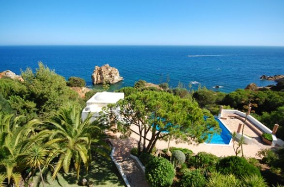

Если у вас возникнет желание разнообразить свое пребывание на отдыхе, вы сможете заказать одну из многочисленных экскурсий, которыми славятся Канарские острова. Экскурсии обслуживаются русскоговорящими гидами и бывают как индивидуальными так и групповыми. Следует отметить, что групповые экскурсии, как правило, дешевле, однако, при бронировании индивидуальных экскурсий вы получаете большую свободу в выборе времени проведения экскурсии и объектов, которые войдут в ваш туристический маршрут. 
Отель Sol Sun Beach расположен рядом с морем на первой линии, на побережье Fanabe Южная часть острова в 100 метрах от коммерческого центра, в 15 км от аэропорта Reina Sofia, в 2 км от Playa de las Americas. В 80 км от Santa Cruz de Tenerife. В 30 км от Национального Парка Teide. В 5 км от Экологического Парка Aguilas del Teide и Гольф площадки. В 1 часе езды на пароме до острова La Gomera, 3 км до аквапарка с дельфинарием.
Любителям активной ночной жизни здесь также скучать не придется. Широкая сеть ночных клубов и ресторанов обеспечит вам веселое времяпрепровождение даже в будние дни. Расположенные на Тенерифе рестораны порадуют вас своим разнообразием: конечно же вам выпадет возможность попробовать блюда островной кухни, однако если в еде вы предпочитаете здоровый консерватизм, вы без труда найдете ресторан, сервирующий исключительно европейские блюда, к которым вы привыкли в Москве или другом городе России. Многочисленные магазины непременно придутся вам по душе широким выбором товаров и соблазнительно низкими ценами.